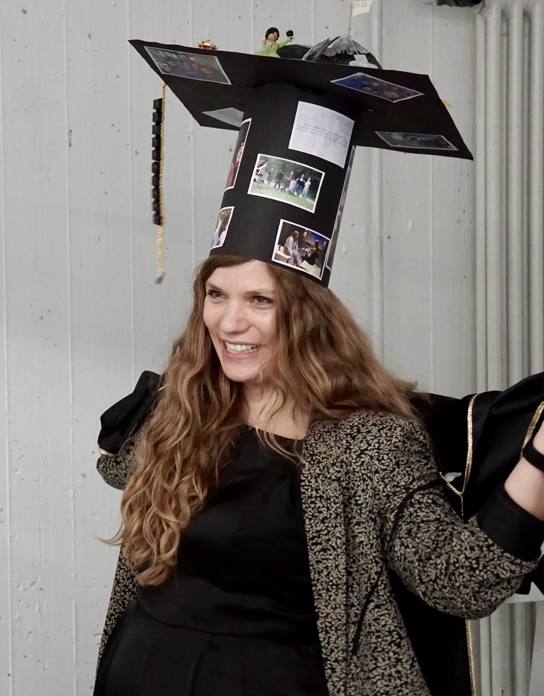

2026
Awarded a Marie Skłodowska-Curie Actions Postdoctoral Fellowship.
2025
Started as a postdoctoral researcher at the Novo Nordisk Foundation Center for Basic Metabolic Research, University of Copenhagen.
Oral presentation at NUNAMED, Greenlandic Health Conference, Nuuk, Greenland.
2024

Completed my Dr. rer. nat. in Biology, magna cum laude.